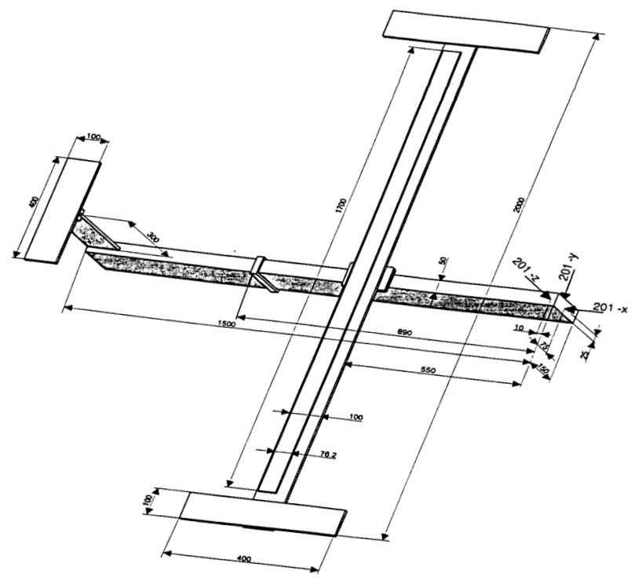

GARTEUR SM-AG19 Testbed: Construction of the geometry
Description
This virtual test application is based on the test article used by the GARTEUR Structures & Materials Action Group 19 which organized a Round Robin exercise where 12 European laboratories tested a single structure between 1995 and 1997. The benchmark structure was a laboratory structure built to simulate the dynamic behaviour of an aeroplane. The structure was initially built for a benchmark study on experimental modal analysis conducted by the Structures and Materials Action Group (SM-AG19) of the Group for Aeronautical Research and Technology in EURope (GARTEUR). The test-bed was designed and manufactured by ONERA, France.

References
- [GARTEUR] Ground Vibration Test Techniques, compiled by A Gravelle, GARTEUR Structures & Materials Action Group 19 Technical report TP-115, 1999.
- [BW] Etienne Balmes, Jan R. Wright, GARTEUR GROUP ON GROUND VIBRATION TESTING | RESULTS FROM THE TEST OF A SINGLE STRUCTURE BY 12 LABORATORIES IN EUROPE, Proceedings of DETC'97, 1997 ASME Design Engineering Technical Conferences, September 14-17, 1997, Sacramento, California.
Goals
- Show how to construct model from multiple connected beams.
- Demonstrate the use of massless connectors.
- Visualize the structure interactively.
#Geometry of the testbed airplane.
The aluminum testbed was a rather simple structure which was reasonably dynamically representative of a simple airplane structure GARTEUR. It was composed of several beams simulating a fuselage with wings and a tail. Wing tip drums allowed to adjust bending and torsion frequencies similarly to airplane ones, with some very close modal frequencies.

The beam finite element code relies on the basic functionality implemented in this package.
using FinEtoolsThis is the characteristic length. The dimensions of the aircraft frame are expressed in terms of multiples of this characteristic unit.
L = 0.1*phun("m");
#Cross-section
Cross-sectional properties are incorporated in the cross-section property. There are several rectangular cross-sections in the model: the fuselage, the wing, the tail. There are also three massless connectors: connections between the fuselage and the wing, between the wing structure and the viscoelastic damping layer, and between the fuselage and the tail.
using FinEtoolsFlexBeams.CrossSectionModule: CrossSectionRectangleBody of the frame (fuselage).
cs_body = CrossSectionRectangle(s -> 1.5*L, s -> L/2, s -> [1.0, 0.0, 1.0]; label = 1)Wing beam.
cs_wing = CrossSectionRectangle(s -> L/10, s -> L, s -> [0.0, 0.0, 1.0]; label = 2)Wing drums.
cs_drum = CrossSectionRectangle(s -> L/10, s -> L, s -> [0.0, 0.0, 1.0]; label = 3)Vertical part of the tail.
cs_tailv = CrossSectionRectangle(s -> L, s -> L/10, s -> [1.0, 0.0, 1.0]; label = 4)Horizontal part of the tail.
cs_tailh = CrossSectionRectangle(s -> L/10, s -> L, s -> [0.0, 0.0, 1.0]; label = 5)Constraining plate on top of the viscoelastic tape.
cs_constrp = CrossSectionRectangle(s -> L*(1.1/100), s -> L*(76.2/100), s -> [0.0, 0.0, 1.0]; label = 6)Massless connectors of the structural parts of the wing: the main beam and the constraining plate.
cs_connw2c = CrossSectionRectangle(s -> L/2, s -> L/2, s -> [1.0, 0.0, 1.0]; label = 7)Massless connectors of the wing and the drums.
cs_connw2d = CrossSectionRectangle(s -> L/2, s -> L/2, s -> [1.0, 0.0, 1.0]; label = 8)Massless connector between the body and the wings.
cs_connb2w = CrossSectionRectangle(s -> L/5, s -> L, s -> [0.0, 1.0, 0.0]; label = 9)Massless connector between the body and the tail.
cs_conntb2t = CrossSectionRectangle(s -> L, s -> L/3, s -> [1.0, 0.0, 1.0]; label = 10)Massless connector between the structure and the sensors and point masses.
cs_connta2p = CrossSectionRectangle(s -> L/5, s -> L/5, s -> [1.0, 0.0, 1.0]; label = 11)
#Mesh
We shall use this utility function to generate the mesh of the individual parts. This will result in a number of separate meshes for the members. These separate meshes will then be glued together (merged) based on the tolerance on the location of the nodes.
using FinEtoolsFlexBeams.MeshFrameMemberModule: frame_member
tolerance = L/10000;Number of intervals from 0.25L to 8.5L (the extent of the constraining plate).
nc = 8
meshes = Tuple{FENodeSet, AbstractFESet}[]Define the constituent parts of the body of the aircraft.
push!(meshes, frame_member([-9*L 0 0; -8.5*L 0 0], 1, cs_body; label = cs_body.label))
push!(meshes, frame_member([-8.5*L 0 0; -8.0*L 0 0], 1, cs_body; label = cs_body.label))
push!(meshes, frame_member([-8.0*L 0 0; -2.0*L 0 0], 2, cs_body; label = cs_body.label))
push!(meshes, frame_member([-2.0*L 0 0; 0 0 0], 1, cs_body; label = cs_body.label))
push!(meshes, frame_member([0 0 0; 6*L 0 0], 2, cs_body; label = cs_body.label))Define the aluminum parts of the wings.
push!(meshes, frame_member([0 0 0.805*L; 0 0.25*L 0.805*L], 1, cs_wing; label = cs_wing.label))
push!(meshes, frame_member([0 0 0.805*L; 0 -0.25*L 0.805*L], 1, cs_wing; label = cs_wing.label))
push!(meshes, frame_member([0 0.25*L 0.805*L; 0 8.5*L 0.805*L], nc, cs_wing; label = cs_wing.label))
push!(meshes, frame_member([0 -0.25*L 0.805*L; 0 -8.5*L 0.805*L], nc, cs_wing; label = cs_wing.label))
push!(meshes, frame_member([0 8.5*L 0.805*L; 0 9.5*L 0.805*L], 1, cs_wing; label = cs_wing.label))
push!(meshes, frame_member([0 -8.5*L 0.805*L; 0 -9.5*L 0.805*L], 1, cs_wing; label = cs_wing.label))
push!(meshes, frame_member([0 9.5*L 0.805*L; 0 10.0*L 0.805*L], 1, cs_wing; label = cs_wing.label))
push!(meshes, frame_member([0 -9.5*L 0.805*L; 0 -10.0*L 0.805*L], 1, cs_wing; label = cs_wing.label))Define the drums at the ends of the wings.
push!(meshes, frame_member([0 +9.5*L +0.91*L; +2*L +9.5*L +0.91*L], 1, cs_drum; label = cs_drum.label))
push!(meshes, frame_member([0 +9.5*L +0.91*L; -2*L +9.5*L +0.91*L], 1, cs_drum; label = cs_drum.label))
push!(meshes, frame_member([0 -9.5*L +0.91*L; +2*L -9.5*L +0.91*L], 1, cs_drum; label = cs_drum.label))
push!(meshes, frame_member([0 -9.5*L +0.91*L; -2*L -9.5*L +0.91*L], 1, cs_drum; label = cs_drum.label))Define the horizontal and vertical parts of the tail.
push!(meshes, frame_member([-8*L 0 .75*L; -8*L 0 3.35*L], 2, cs_tailv; label = cs_tailv.label))
push!(meshes, frame_member([-8*L 0 3.35*L; -8*L 0 3.75*L], 2, cs_tailv; label = cs_tailv.label))
push!(meshes, frame_member([-8*L 0 3.8*L; -8*L 2*L 3.8*L], 2, cs_tailh; label = cs_tailh.label))
push!(meshes, frame_member([-8*L 0 3.8*L; -8*L -2*L 3.8*L], 2, cs_tailh; label = cs_tailh.label))Define the parts of the aluminum constraining plate for the viscoelastic layer.
push!(meshes, frame_member([-.119*L 0 0.8665*L; -.119*L 0.25*L 0.8665*L], 1, cs_constrp; label = cs_constrp.label))
push!(meshes, frame_member([-.119*L 0 0.8665*L; -.119*L -0.25*L 0.8665*L], 1, cs_constrp; label = cs_constrp.label))
push!(meshes, frame_member([-.119*L 0.25*L 0.8665*L; -.119*L 8.5*L 0.8665*L], nc, cs_constrp; label = cs_constrp.label))
push!(meshes, frame_member([-.119*L -0.25*L 0.8665*L; -.119*L -8.5*L 0.8665*L], nc, cs_constrp; label = cs_constrp.label))Define the massless connectors between: Wing - Wingdrum
push!(meshes, frame_member([0 +9.5*L +0.805*L;0 +9.5*L +0.91*L], 1, cs_connw2d; label = cs_connw2d.label))
push!(meshes, frame_member([0 -9.5*L +0.805*L;0 -9.5*L +0.91*L], 1, cs_connw2d; label = cs_connw2d.label))Body-Wing
push!(meshes, frame_member([0 0 0; 0 0.25*L .805*L], 1, cs_connb2w; label = cs_connb2w.label))
push!(meshes, frame_member([0 0 0; 0 -0.25*L .805*L], 1, cs_connb2w; label = cs_connb2w.label))Body-Tail
push!(meshes, frame_member([-8*L 0 0; -8*L 0 .75*L], 1, cs_conntb2t; label = cs_conntb2t.label))Tail-Taildrum
push!(meshes, frame_member([-8*L 0 3.75*L; -8*L 0 3.8*L], 1, cs_connw2d; label = cs_connw2d.label))Wing-Constraining plate for the viscoelastic layer Middle connector created individually
push!(meshes, frame_member([0 0 .805*L; -.119*L 0 0.8665*L], 1, cs_connw2c; label = cs_connw2c.label))Connectors alongside both wings
for i in 1:nc+1
push!(meshes, frame_member([0 (0.25+(i-1)*8.25/nc)*L .805*L; -.119*L (0.25+(i-1)*8.25/nc)*L 0.8665*L], 1, cs_connw2c; label = cs_connw2c.label))
push!(meshes, frame_member([0 -(0.25+(i-1)*8.25/nc)*L .805*L; -.119*L -(0.25+(i-1)*8.25/nc)*L 0.8665*L], 1, cs_connw2c; label = cs_connw2c.label))
endMassless Sensor Connectors Tail Sensors
push!(meshes, frame_member([-8*L 2*L 3.8*L; -(153/20)*L (37/20)*L 3.85*L], 1, cs_connta2p; label = cs_connta2p.label))# 303
push!(meshes, frame_member([-8*L -2*L 3.8*L; -(153/20)*L -(37/20)*L 3.85*L], 1, cs_connta2p; label = cs_connta2p.label))# 301Wingdrum Sensors
push!(meshes, frame_member([0 9.5*L .91*L ; 0 9.8*L .96*L], 1, cs_connta2p; label = cs_connta2p.label))# 101
push!(meshes, frame_member([-2*L 9.5*L .91*L ; -1.8*L 9.8*L .96*L], 1, cs_connta2p; label = cs_connta2p.label))# 112
push!(meshes, frame_member([2*L 9.5*L .91*L ; 1.8*L 9.8*L .96*L], 1, cs_connta2p; label = cs_connta2p.label))# 111
push!(meshes, frame_member([0 -9.5*L .91*L ; 0 -9.8*L .96*L], 1, cs_connta2p; label = cs_connta2p.label))# 1
push!(meshes, frame_member([-2*L -9.5*L .91*L ; -1.8*L -9.8*L .96*L], 1, cs_connta2p; label = cs_connta2p.label))# 12
push!(meshes, frame_member([2*L -9.5*L .91*L ; 1.8*L -9.8*L .96*L], 1, cs_connta2p; label = cs_connta2p.label))# 11Wingdrum complementary masses
push!(meshes, frame_member([2*L 9.5*L .91*L ; 1.8*L 9.2*L .96*L], 1, cs_connta2p; label = cs_connta2p.label))# added mass
push!(meshes, frame_member([2*L -9.5*L .91*L ; 1.8*L -9.2*L .96*L], 1, cs_connta2p; label = cs_connta2p.label))# added mass
#Merge all the individual members into one coherent structure
Merge all the meshes of individual parts. This will glue together nodes which are in the "same" location. The parts of the mesh can be distinguished based on the label.
fens, fesa = mergenmeshes(meshes, tolerance)The result is the set of the finite element nodes, and an array of the finite element sets. The sets of the finite elements can be distinguished based on the label.
The number of nodes in the mesh:
@show count(fens)The number of the finite element sets:
@show length(fesa)The labels of the finite element sets
@show [s.label[1] for s in fesa]'End of the tutorial
trueThis page was generated using Literate.jl.